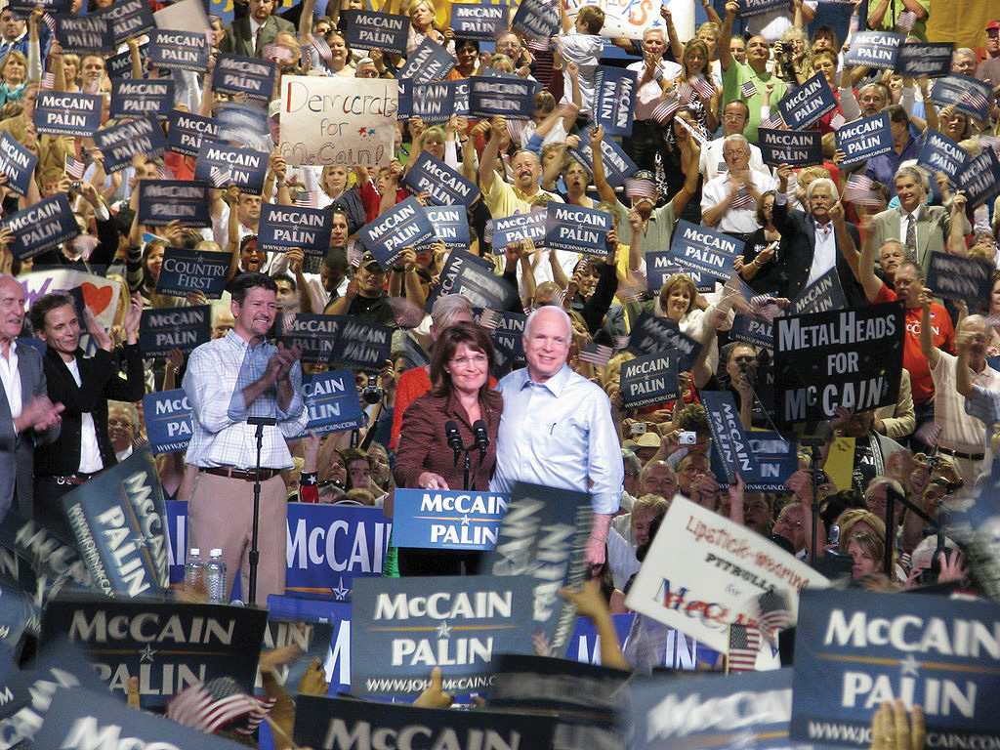

After reading this section, you should be able to answer the following questions:
This section covers campaign organization, funding, and strategy. Getting elected often requires defeating opponents from the same political party in a primary electionAn election that decides who will be a political party’s nominee for an office in the general election. in order to become that party’s nominee. One party’s nominee must defeat the candidates from other parties in the general electionAn election, typically held after the political parties have chosen their nominees through caucuses or primaries, that decides who will hold an office, such as a congressional representative or president.. Election campaigns require organization, funding, and strategy. Legal guidelines, especially for campaign finance, influence the environment within which elections take place.
It takes the coordinated effort of a staff to run a successful campaign for office. The staff is headed by the campaign manager who oversees personnel, allocates expenditures, and develops strategy. The political director deals with other politicians, interest groups, and organizations supporting the candidate. The finance director helps the candidate raise funds directly and through a finance committee. The research director is responsible for information supporting the candidate’s position on issues and for research on the opponents’ statements, voting record, and behavior, including any vulnerabilities that can be attacked.
The press secretary promotes the candidate to the news media and at the same time works to deflect negative publicity. This entails briefing journalists, issuing press releases, responding to reporters’ questions and requests, and meeting informally with journalists. As online media have proliferated, the campaign press secretary’s job has become more complicated, as it entails managing the information that is disseminated on news websites, such as blogs like the Huffington Post, and social mediaDigital media platforms that allow users to create and share content easily and that have been used in elections to share candidate information and videos, organize events, and collect campaign donations., such as Facebook. Campaigns also have consultants responsible for media strategy, specialists on political advertising, and speech writers.
Relatedly, focus groups bring together a few people representative of the general public or of particular groups, such as undecided voters, to find out their reactions to such things as the candidate’s stump speech delivered at campaign rallies, debate performance, and campaign ads.
“Money is the mother’s milk of politics,” observed the longtime and powerful California politician Jesse Unruh. The cost of organizing and running campaigns has risen precipitously. The 2008 presidential and congressional elections cost $5.3 billion dollars, a 25 percent increase over 2004.Brody Mullins, “Cost of 2008 Election Cycle: $5.3 Billion,” Wall Street Journal, October 23, 2008. Around 60 percent of this money goes for media costs, especially television advertising. The Campaign Finance Institute has a wealth of information about funding of American election campaigns.
In an episode of The Simpsons, Homer’s boss tells him, “Do you realize how much it costs to run for office? More than any honest man could afford.”“Two Cars in Every Garage, Three Eyes on Every Fish,” The Simpsons, November 1990. Spurred by media criticisms and embarrassed by news stories of fund-raising scandals, Congress periodically passes, and the president signs, laws to regulate money in federal elections.
The Federal Election Campaign Act (FECA)A federal law originally passed in 1971 that limited the amount of money that individuals, political parties, and political groups could contribute to campaigns. of 1971, amended in 1974, limited the amount of money that individuals, political parties, and political groups could contribute to campaigns and provided guidelines for how campaign funds could be spent. The FECA also provided a system of public financing for presidential campaigns. It required that campaigns report their financial information to a newly established enforcement institution, the Federal Elections Commission (FEC)The institution that oversees campaign finance, including campaign contributions and candidate expenditures., which would make it public.
Opponents challenged the constitutionality of these laws in the federal courts, arguing that they restrict political expression.See Bradley A. Smith, Unfree Speech: The Folly of Campaign Finance Reform (Princeton, NJ: Princeton University Press, 2001); and John Samples, The Fallacy of Campaign Finance Reform (Chicago: University of Chicago Press, 2006). In the 1976 case of Buckley v. Valeo, the Supreme Court upheld the limits on contributions and the reporting requirement but overturned all limits on campaign spending except for candidates who accept public funding for presidential election campaigns.Buckley v. Valeo, 424 US 1 (1976). The Supreme Court argued that campaign spending was the equivalent of free speech, so it should not be constrained.
This situation lasted for around twenty years. “Hard money”Funds, contributed directly to candidate campaigns, that are subject to government regulation. that was contributed directly to campaigns was regulated through the FECA. However, campaign advisors were able to exploit the fact that “soft money”Funds contributed to political parties for get-out-the-vote drives, party-building activities, and issue advertising that was not subject to contribution or expenditure limitations as long as it was not used directly for candidate advertising. given to the political parties for get-out-the-vote drives, party-building activities, and issue advertising was not subject to contribution limits. Soft money could be spent for political advertising as long as the ads did not ask viewers to vote for or against specific candidates. Nonparty organizations, such as interest groups, also could run issue ads as long as they were independent of candidate campaigns. The Democratic and Republican parties raised more than $262 million in soft money in 1996, much of which was spent on advertising that came close to violating the law.Dan Froomkin, “Special Report: Campaign Finance: Overview Part 4, Soft Money—A Look at the Loopholes,” Washington Post, September 4, 1998.
Figure 11.3 Republican National Committee Ad Featuring Presidential Candidate Bob Dole

The Republican National Committee used “soft money” to produce an ad that devoted fifty-six seconds to presidential candidate Bob Dole’s biography and only four seconds to issues. Similarly, the Democratic National Committee used “soft money” on ads that promoted candidate Bill Clinton. These ads pushed the limits of campaign finance laws, prompting a call for reform.
Source: Photo courtesy of the US Department of Defense by Samantha Quigley, http://commons.wikimedia.org/wiki/File:Bob_Dole_VE_Day_60th_Anniversery.jpg.
Congress responded with the Bipartisan Campaign Reform Act (BCRA)Also known as McCain-Feingold, this federal law placed limitations on soft-money contributions by political committees and prohibited corporations and labor unions from advocating for or against a candidate via broadcast, cable or satellite prior to presidential primaries and the general election. of 2002, better known by the names of its sponsoring senators as McCain-Feingold. It banned soft-money contributions by political committees and prohibited corporations and labor unions from advocating for or against a candidate via broadcast, cable, or satellite prior to presidential primaries and the general election. A constitutional challenge to the law was mounted by Senate Majority Whip Mitch McConnell, who believed that the ban on advertising violated First Amendment free-speech rights. The law was upheld by a vote of 5–4 by the Supreme Court.McConnell v. Federal Election Commission, 540 US 93 (2003). This decision was overruled in 2010 when the Supreme Court ruled that restricting independent spending by corporations in elections violated free speech.Citizens United v. Federal Election Commission, 130 S.Ct. 876 (2010). The case concerned the rights of Citizens United, a conservative political group, to run a caustic ninety-minute film, Hillary: The Movie, on cable television to challenge Democratic candidate Hillary Rodham Clinton as she ran in the 2008 primary election campaign. The 5–4 decision divided the Supreme Court, as justices weighed the interests of large corporations against the Constitutional guarantee of free speech.Adam Liptak, “Justices 5–4, Reject Corporate Spending Limit,” New York Times, January 21, 2010.
In April 2011 comedic news anchor Stephen Colbert announced his intention to form a “super PAC” to expose loopholes in the campaign finance laws that allow corporations to form political actions committees, which can spend unlimited amounts of money in elections on advertising. Colbert testified in front of the FEC and was granted permission to form his PAC, which would be funded by Viacom, the media corporation that owns Comedy Central, which hosts The Colbert Report. The decision sparked concern that media organizations would be free to spend unlimited amounts of money in campaigns; however, the FEC’s decision imposed the strict limitation that Colbert could only show the ads on his program. Colbert announced the FEC’s decision to allow him to form a PAC to raise and spend funds in the 2012 election in this video: http://www.colbertnation.com/the-colbert-report-videos/391146/june-30-2011/colbert-super-pac---i-can-haz-super-pac-.
There are six main sources of funding for federal elections. These sources include individuals, political action committees, public funding, candidates’ contributions to their own campaigns, political party committees, and advocacy organizations or “527 committees.” Individuals contribute the most to election campaigns. Individual donations amounted to $1,330,861,724Campaign finance data for the 2008 campaign are available at the Federal Election Commission, “Presidential Campaign Finance: Contributions to All Candidates by State,” http://www.fec.gov/DisclosureSearch/mapApp.do. for the 2008 presidential election cycle. People can give up to $2,300 to candidates for each primary, runoff, and general election; $28,500 annually to national political parties and $10,000 to each state party; $2,300 to a legal compliance fund; and as much as they want to a political action committee (PAC)Funds associated with business or labor organizations or with politicians and created in order to finance candidates’ campaigns. and advocacy organizations. PACs were developed by business and labor to fund candidates. Politicians have also created PACs. They can give up to $5,000 per candidate per election. In 2008, they gave the second-largest amount: $5,221,500.
Presidential candidates can opt for public funding of their election campaigns. The funds come from an income tax check-off, where people can check a box to contribute $3 to a public funding account. To qualify for public funding, candidates must have raised $100,000 in amounts of $250 or less, with at least $5,000 from each of twenty states. The first $250 of every individual contribution is matched with public funds starting January 1 of the election year. However, candidates who take public funds must adhere to spending limits.
Figure 11.4 Presidential Candidate John McCain on the Campaign Trail in 2008
In 2008, Republican candidate John McCain criticized his Democratic opponent, Barack Obama, for failing to use public financing for his presidential bid, as he had promised. McCain felt disadvantaged by taking public funds because the law limits the amount of money he could raise and spend, while Obama was not subject to these restrictions.
Source: Photo courtesy of Matthew Reichbach, http://commons.wikimedia.org/wiki/File:Sarah_Palin_and_John_McCain_in_Albuquerque.jpg.
Party committees at the national, state, and local level, as well as the parties’ Senate and House campaign committees, can give a Senate candidate a total of $35,000 for the primary and then general election and $5,000 to each House candidate. There is no limit on how much of their own money candidates can spend on their campaigns. Neither John McCain nor Barack Obama used personal funds for their own campaigns in 2008. Self-financed presidential candidates do not receive public funds.
Known as “527 committees”Advocacy groups that can receive and spend unlimited amounts of money in elections as long as they do not coordinate with candidates’ campaign organizations or political parties in support of or opposition to a candidate. after the Internal Revenue Service regulation authorizing them, advocacy groups, such as the pro-Democratic MoveOn.org and the pro-Republican Progress for America, can receive and spend unlimited amounts of money in federal elections as long as they do not coordinate with the candidates or parties they support and do not advocate the election or defeat of a candidate. They spent approximately $400 million in all races in the 2008 election cycle. In the wake of the Supreme Court decision supporting the rights of Citizens United to air Hillary: The Movie, spending by independent committees grew tremendously. The 527 committees spent $280 million in 2010, an increase of 130 percent from 2008.Campaign Finance Institute, “Non-Party Spending Doubled in 2010 But Did Not Dictate the Results” press release, November 5, 2010.
Most campaigns have a strategy to win an election by raising funds, recruiting volunteers, and gaining votes. Campaign strategies take into account voters’ party identification, the candidate’s image, and issues. Candidates carry out their strategy through retail politics and the media.
In retail politicsCampaign activity, also known as field operations, in which candidates engage in person-to-person encounters with potential voters., also known as field operations, candidates engage in person-to-person campaigning. They speak at rallies, visit voters in their homes, and put in appearances at schools, religious institutions, and senior-citizen centers. They greet workers outside factories and in eateries and hold town-hall meetings. The campaign distributes posters, lawn signs, T-shirts, baseball caps, and buttons.
If the campaign has sufficient funds, retail politics involves microtargetingUse of computers and mathematical models to identify people’s vote preferences based on a variety of factors ranging from their partisan preferences to their purchasing history., using computers and mathematical models to identify people’s vote preferences on the bases of the magazines they read, credit card purchases, and the cars they own.Leslie Wayne, “Democrats Take Page from Their Rival’s Playbook,” New York Times, October 31, 2008. This information is used to woo undecided voters and ensure that supporters are registered and cast their ballot. Microtargeting has become more common and efficient in the information age.
Candidates have a base of support, usually from people who are registered with and consistently vote for the candidate’s party. For a candidate whose party has a majority of the people registered to vote in an electoral district, all it takes to win the election is getting enough of them out to vote. This may be easier said than done.
Party identificationA person’s affiliation with a political party that can be a strong predictor of his vote choice in an election. seldom decides elections alone, although it is a strong predictor of a person’s vote choice. A candidate’s image and her position on issues are also important, particularly when independents and undecided voters hold the balance. It does not apply in a primary when all the candidates are of the same party.
Candidate imageThose aspects of a candidate’s background, experience, and personal qualities that are presented to the public in order to influence people’s voting decisions. consists of the background, experiences, and personal qualities of people running for elected office. Campaigns strive to present an image of their candidate that fits the public’s expectations of the office sought, especially in comparison with the opponent, who is portrayed as less qualified. Voters expect the president to have leadership skills and to be principled, decisive, and honest. Other qualities, such as military service and compassion, may be deemed by the public and the media to be important as well.
Figure 11.5 George W. Bush and Al Gore in the 2000 Presidential Election

The media’s depictions of presidential candidates Republican George W. Bush and Democrat Al Gore during the 2000 presidential election influenced public perceptions. Bush was depicted as being unintelligent by news organizations that compiled lists of his gaffes and malapropisms. Gore was construed as being dishonest for allegedly claiming that he invented the Internet.
Source: Photo (left) courtesy of the White House by Eric Draper, http://commons.wikimedia.org/wiki/File:George-W-Bush.jpeg. Photo (right) courtesy of the World Resources Institute Staff, http://commons.wikimedia.org/wiki/File:Al_Gore.jpg.
Images are not entirely malleable. Age, gender, race, and military service cannot be changed willy-nilly. But they can be manipulated by selective accounting and shrewd presentation of the facts. Images are easiest to create early in a campaign when many people may not know much about a candidate. Which of a candidate’s possible images the public accepts often depends on the media’s depictions.
Issues, subjects, and public-policy positions on matters of concern are central to campaigns. Candidates take positions on issues that are designed to increase their chances of election. Issues raised during campaigns are often based on voters’ concerns that are identified by polls. The media can make issues a prominent part of the election agenda, which can work for or against a candidate.
Many candidates have past records indicating their stands on issues, leaving them little choice about how to manage some issues. Incumbents claim credit for their accomplishments. Challengers blame the incumbent for the country’s problems. Moreover, each party is associated with certain issues. Democrats are seen as the party to protect social security, improve the economy by creating jobs, increase the minimum wage, and expand health care coverage. Republicans are viewed as the party to strengthen national defense, cut taxes, and be tough on crime.
Wedge issuesIssues that cut across party lines and that can be used by candidates to attract voters who affiliate with the opposition party. are issues that cut across party lines. A candidate can increase her vote by splitting off some of the people who usually support the other party and its candidates.D. Sunshine Hillygus and Todd G. Shields, The Persuadable Voter: Wedge Issues in Presidential Campaigns (Princeton, NJ: Princeton University Press, 2008). Republicans have employed affirmative action as a wedge issue in order to siphon off from the Democrat’s base working-class white men who oppose it. Democrats have used abortion rights to appeal to some conservative Republican women.
Implementing strategy effectively requires staying on message. Candidates are like barkers at a fairground, each promoting his or her own show. At every opportunity they repeat their message, which is sometimes abbreviated into a slogan. In 1992 the main message of Bill Clinton’s presidential campaign was “It’s the economy, stupid,” which was aimed at blaming President George H. W. Bush for the country’s economic problems. Barack Obama’s campaign slogan in 2008, “Change we can believe in,” was a fresh take on a familiar call for change in American politics.
Figure 11.6 Barack Obama’s Campaign Slogan

Presidential candidate Barack Obama reinforced his campaign slogan, “Change we can believe in,” during his campaign trail appearances in 2008.
Source: Photo courtesy of Bbsrock, http://commons.wikimedia.org/wiki/File:ObamaAbingtonPA.JPG.
Staying on message is not easy. Campaigns constantly have to react to unexpected events and to the other side’s statements and actions—all in a twenty-four-hour news cycle. They usually respond rapidly to new subjects and issues, deflecting, reframing, or exploiting them.
Elections are crucial in a representative democracy like the United States. They enable people to choose their leaders and thereby influence public policy. They endow elected officials with legitimacy. There are two main types of elections: primary and general elections. Candidates from the same political party contest for the party’s nomination in primary elections. Candidates from different parties run in the general election, which decides who will take office.
Campaign finance is an integral element of American elections. Individuals, PACs, public funds, political parties, candidates themselves, and 527 committees fund campaigns. Campaign finance laws have shaped the way that candidates raise and spend money in elections, especially presidential candidates who accept public funding.
Candidates engage in retail politics by meeting with voters on the campaign trail. Campaigns employ strategies that take into account party identification, candidate image, issues, and message cohesion.